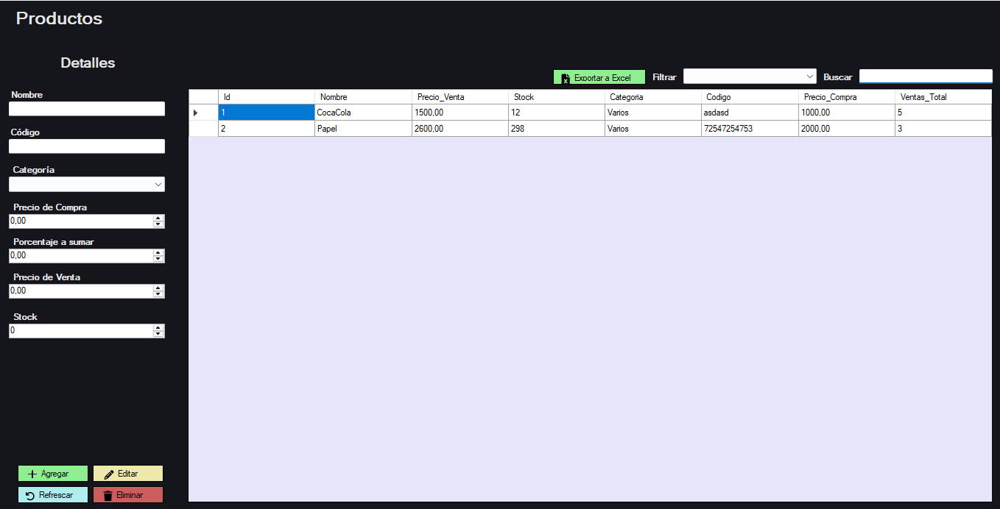

Estándar
Pro
POSKo Pro
Leer el artículo de POSKo Estándar antes de este.
Diferencias clave con POSKo Estándar
- Sistema de Usuarios y roles
- Integración con impresora térmica de tickets
- Servidor LAN: funciona en múltiples computadoras al mismo tiempo
POSKo Pro es una solución integral para responsables que desean tener un control total de cada rincón de su negocio.
POSKo Pro presenta una diferencia fundamental con su versión estándar: funciona de forma online, a través de LAN (misma red Wi-Fi).
Esto significa que es posible utilizarlo desde distintas máquinas.
POSKo Pro presenta un sistema de roles empleado-administrador que se encarga de restringir las funciones adecuadas para cada rol, sin cortar el flujo del negocio.
Gestiona Usuarios y sus permisos dentro de POSKo Pro.
Analiza y exporta los detalles históricos de tus ventas.
Sistema de guardado de días: guarda los datos de cada uno de los días que trabajes, y deja a POSKo Pro encargarse de separarlos por fecha.

También brinda la posibilidad de integrar el programa con una impresora térmica de tickets a modo de comprobantes, que detalla datos del negocio y la venta general.
Accede a los datos de tu negocio y genera comprobantes dejando tu huella.
Recomendamos POSKo Pro a todo tipo de negocios, y en especial a aquellos que mantengan relación con empleados.
Esto es POSKo Pro base. Recuerda que las funciones pueden ser adaptadas a tus necesidades.
Características Técnicas
Base de datos: MySQL (online, profesional y segura).
Tipo: LAN (Misma red Wi-Fi).
Compatible con Windows.
Requiere conexión a internet.
Instalación de servidor guiada y ejecutada por nosotros.
Instalación liviana, interfaz intuitiva y sin dependencias complejas.
Precio actual: $109,000 ARS
Solicitar Volver